Mutually exclusive primary-failure taxonomy across all 32 validation samples from
logs/val_msa_vit_h_*_dice_ce_conv_improved_tta_*/Samples (ViT-H SAM encoder + improved convolutional adapter + TTA + Dice-CE).
Samples sharing the same dominant failure mode across different datasets are grouped together, with an interactive triple-image comparison
(Original Fundus | Predicted Map | Ground-Truth Mask) and color-coded error diff toggle for every sample.
Each sample is assigned to its single most dominant failure category. Click any sample badge below to jump directly to its category and load its triple-image comparison. Per-sample pixel metrics (Dice, FNR, FP/GT) are measured directly from the cropped predicted and ground-truth visualization panels (filtering colored prompt-point markers in GT).
| Failure Category | CHASE (8 samples) | DRIVE (20 samples) | STARE (4 samples) | Avg Dice | Avg FNR | Avg FP/GT |
|---|---|---|---|---|---|---|
| #1 Fine Capillary & Terminal Branch Omission 10 / 32 samples (2 CHASE · 7 DRIVE · 1 STARE) | 0.810 | 21.3% | 15.5% | |||
| #2 Vessel Dilation & Parallel Branch Merging 9 / 32 samples (3 CHASE · 5 DRIVE · 1 STARE) | 0.810 | 12.3% | 28.8% | |||
| #3 Topological Fragmentation & Discontinuity 6 / 32 samples (1 CHASE · 4 DRIVE · 1 STARE) | 0.801 | 16.9% | 24.4% | |||
| #4 Low-Contrast / Illumination & Lesion Interference 7 / 32 samples (2 CHASE · 4 DRIVE · 1 STARE) | 0.801 | 17.3% | 23.9% |
Severe recall drop-off on 1–2 px wide distal arterioles, macular tributaries, and fine tertiary capillary networks, while primary vascular arcades remain cleanly segmented with low false-positive rates.
Quantitative Signature: High False Negative Rate (FNR 17.2%–24.6%), elevated Thin-Vessel FN% (29.3%–38.6% on GT skeleton pixels with distance transform ≤ 1.5 px), and restrained FP/GT ratio (0.084–0.222).
Likely Cause: Global optimal thresholding calibrated for Dice maximizes precision on dominant trunks at the expense of faint low-contrast capillaries whose sub-pixel widths get attenuated by ViT patch embedding downsampling and convolutional adapter smoothing.
Actionable Fix: Add centerline/skeleton-weighted loss (clDice or thin-vessel focal Dice), supervise multi-scale high-resolution decoder skips, or apply hysteresis / dual-threshold post-processing seeded from high-confidence trunks.
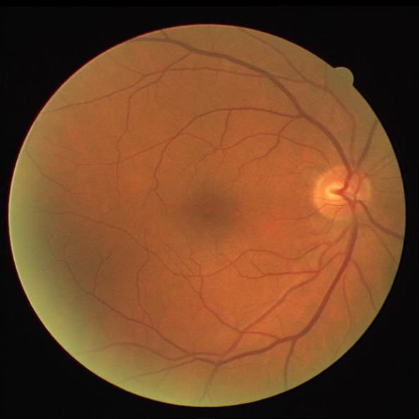
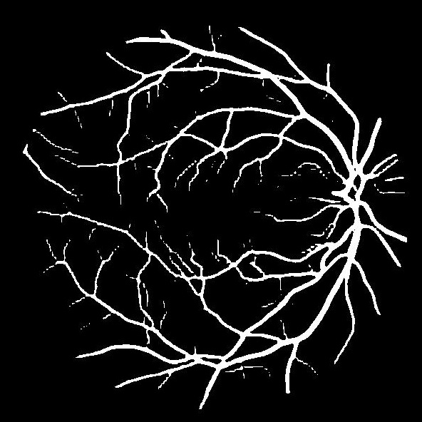
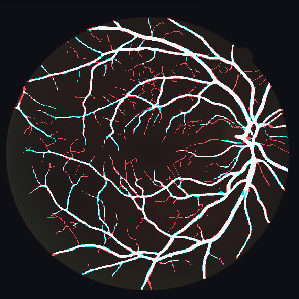
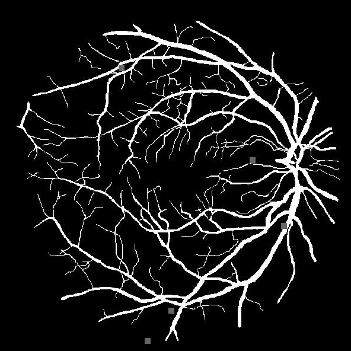
| Dataset | Sample | Source Composite (Col) | Dice | FNR | FP/GT | Thin FN% | Thick FP% | CCs (P/G) | Sample Failure Observation |
|---|---|---|---|---|---|---|---|---|---|
| CHASE | Image_12L | TestImage_12L+Image_14L+epoch+53.jpg Left | 0.811 | 16.6% | 22.2% | 34.7% | 79% | 92 / 139 | Misses distal thin branching capillaries in TL/BR quadrants (ThinFN 34.7%) while preserving primary disc arcades. |
| CHASE | Image_14L | TestImage_12L+Image_14L+epoch+53.jpg Right | 0.832 | 17.8% | 15.4% | 36.8% | 83% | 147 / 34 | Highest Dice in CHASE (0.832) with low FP/GT (0.154), but omits fine macular/BR terminal filaments (ThinFN 36.8%). |
| DRIVE | 02 | Test02+16+epoch+80.jpg Left | 0.832 | 17.2% | 16.4% | 29.3% | 96% | 149 / 395 | Best Dice in DRIVE (0.832) yet 29.3% of thin capillary pixels drop out, notably in upper-left/lower-left distal branches. |
| DRIVE | 04 | Test05+04+epoch+80.jpg Right | 0.817 | 20.4% | 15.3% | 35.3% | 98% | 128 / 647 | Severe lower-left macular/peripheral capillary omission (BL quadrant FNR 37%, overall ThinFN 35.3%) with very low FP/GT (0.153). |
| DRIVE | 05 | Test05+04+epoch+80.jpg Left | 0.801 | 23.7% | 14.1% | 37.8% | 98% | 165 / 643 | Misses dense perimacular fine vessel network across TR/BR quadrants (ThinFN 37.8%, FNR 23.7%) while main trunks stay crisp. |
| DRIVE | 06 ★ Representative | Test06+09+epoch+80.jpg Left | 0.795 | 24.5% | 14.5% | 38.6% | 98% | 179 / 673 | Primary Representative: Highest FNR in DRIVE (24.5%) and worst ThinFN (38.6%); extensive fine capillary dropout across TL/BL/TR. |
| DRIVE | 07 | Test20+07+epoch+80.jpg Right | 0.804 | 23.9% | 13.2% | 37.5% | 98% | 149 / 561 | High thin-vessel miss rate (ThinFN 37.5%, FNR 23.9%), concentrated in upper-left temporal periphery (TL FNR 36%) with minimal FP (0.132). |
| DRIVE | 09 | Test06+09+epoch+80.jpg Right | 0.792 | 22.1% | 18.7% | 33.5% | 98% | 173 / 583 | Extensive loss of fine branching twigs in TR/BR quadrants (ThinFN 33.5%, FNR 22.1%); major arcades remain well-delineated. |
| DRIVE | 13 | Test01+13+epoch+80.jpg Right | 0.798 | 22.4% | 16.9% | 36.0% | 96% | 202 / 628 | Dense fine capillary tree in TL/BL is heavily pruned (ThinFN 36.0%, FNR 22.4%, TL FNR 31%), keeping FP/GT low (0.169). |
| STARE | im0255 | Testim0255+im0291+epoch+39.jpg Left | 0.821 | 24.6% | 8.4% | 38.0% | 96% | 238 / 171 | Highest FNR across all 32 samples (24.6%, ThinFN 38.0%) and lowest FP/GT (0.084); drops fine central/macular capillary meshwork. |
Uniform 1–3 px cuff-like boundary over-thickening along primary and secondary trunks, causing closely spaced parallel vessels and acute bifurcations near the optic nerve head to fuse into thick undifferentiated blobs.
Quantitative Signature: Highest FP/GT ratios (0.219–0.414) paired with low FNR (10.3%–15.0%); 82%–98% of all false positives lie within a 2 px dilation halo of ground-truth vessel boundaries (ThickFP%).
Likely Cause: 4-view/8-view TTA probability averaging blurs sharp vessel edges, and global threshold tuning shifts downward to boost capillary sensitivity on the dataset—causing high-contrast main arcades to over-expand beyond their true caliber.
Actionable Fix: Incorporate boundary-aware loss (Hausdorff / Lovász-Softmax / Boundary IoU), apply probability sharpening prior to TTA fusion, and test vessel-caliber-adaptive or local contrast-normalized thresholding.
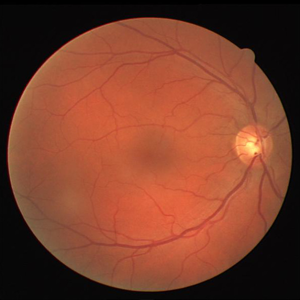
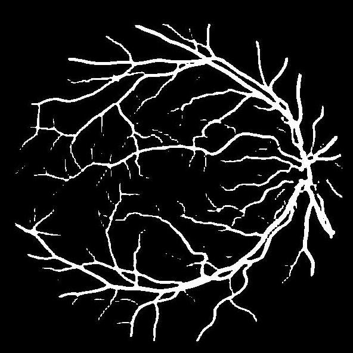
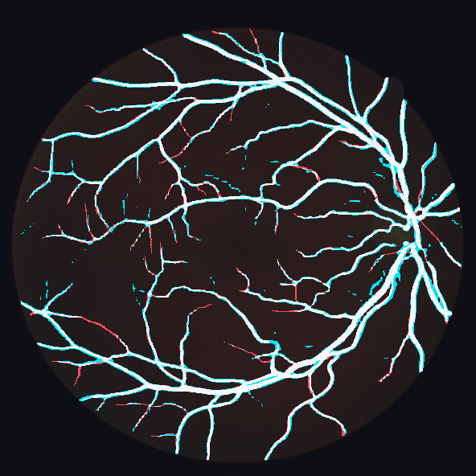
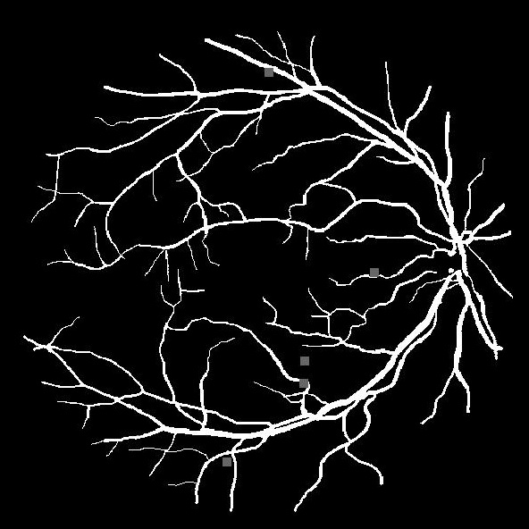
| Dataset | Sample | Source Composite (Col) | Dice | FNR | FP/GT | Thin FN% | Thick FP% | CCs (P/G) | Sample Failure Observation |
|---|---|---|---|---|---|---|---|---|---|
| CHASE | Image_11L | TestImage_11L+Image_13R+epoch+53.jpg Left | 0.827 | 13.2% | 23.1% | 28.6% | 86% | 139 / 315 | Consistent boundary thickening along main temporal arcades (ThickFP% 86%, FP/GT 0.231) merging close parallel disc branches. |
| CHASE | Image_11R | TestImage_11R+Image_14R+epoch+53.jpg Left | 0.828 | 10.9% | 26.1% | 23.9% | 82% | 81 / 135 | Lowest FNR in CHASE (10.9%) offset by high FP/GT (0.261); over-dilation fuses parallel vessels near optic disc and BL arcade. |
| CHASE | Image_12R | TestImage_12R+Image_13L+epoch+53.jpg Left | 0.822 | 15.0% | 21.9% | 32.2% | 84% | 148 / 267 | Over-thickened superior/inferior main trunks (ThickFP% 84%, FP/GT 0.219) causing adjacent twin vessels in TL to coalesce. |
| DRIVE | 01 | Test01+13+epoch+80.jpg Left | 0.805 | 12.5% | 29.9% | 18.6% | 97% | 152 / 447 | Strong wall dilation across all quadrants (FP/GT 0.299, ThickFP% 97%) merging closely running vessels near the temporal optic rim. |
| DRIVE | 15 | Test11+15+epoch+80.jpg Right | 0.802 | 14.8% | 27.1% | 21.9% | 97% | 121 / 448 | High recall (FNR 14.8%) accompanied by 27.1% FP/GT ratio (ThickFP% 97%), visibly fattening main arcade calibers. |
| DRIVE | 18 | Test18+19+epoch+80.jpg Left | 0.787 | 11.8% | 35.9% | 16.9% | 96% | 146 / 114 | Second highest FP/GT in DRIVE (0.359, ThickFP% 95%) and low Dice (0.787); aggressive wall dilation thickens trunks and merges disc bifurcations. |
| DRIVE | 19 | Test18+19+epoch+80.jpg Right | 0.815 | 10.9% | 29.6% | 15.5% | 96% | 192 / 301 | Heavy boundary expansion (FP/GT 0.296, ThickFP% 96%) with low FNR (10.9%), fusing narrow inter-vessel gaps around the optic nerve head. |
| DRIVE | 20 ★ Representative | Test20+07+epoch+80.jpg Left | 0.776 | 10.3% | 41.4% | 14.5% | 90% | 147 / 137 | Primary Representative: Worst Dice in DRIVE (0.776) and highest FP/GT overall (0.414, TL FP/GT 0.47); pronounced cuff-like dilation & fusion. |
| STARE | im0291 | Testim0255+im0291+epoch+39.jpg Right | 0.831 | 11.7% | 24.2% | 19.8% | 90% | 31 / 53 | Despite peripheral haze, exhibits aggressive trunk thickening (FP/GT 0.242, ThickFP% 90%) and low FNR (11.7%), merging disc-adjacent trunks. |
Intermediate-caliber vessels and branching arcades intermittently drop below the segmentation threshold, disintegrating into disconnected dashed/dotted islands, broken junctions, and gaps along continuous vascular paths.
Quantitative Signature: Markedly elevated predicted-to-GT connected component ratios or severely fragmented intermediate branches (e.g., DRIVE 16: 200 pred vs. 78 GT CCs [2.56×]; CHASE Image_14R: 91 pred vs. 2 GT CCs), paired with balanced moderate FNR (14.9%–19.8%) and FP/GT (0.220–0.265).
Likely Cause: Pixel-wise Dice + Cross-Entropy optimizes per-pixel overlap without enforcing topological continuity; central arterial light reflexes or slight local contrast dips along mid-caliber vessels sever the binary mask into isolated islands.
Actionable Fix: Train with topology-preserving clDice / Persistent Homology loss, introduce morphological directional closing or graph-based vessel reconnection post-processing.
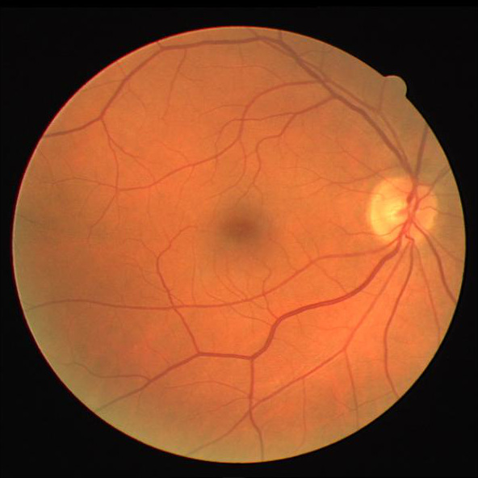
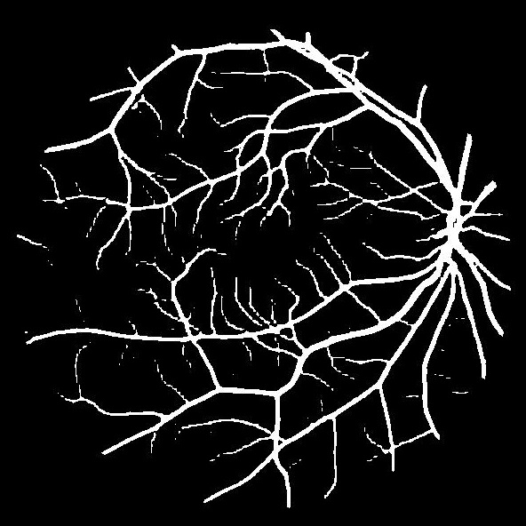
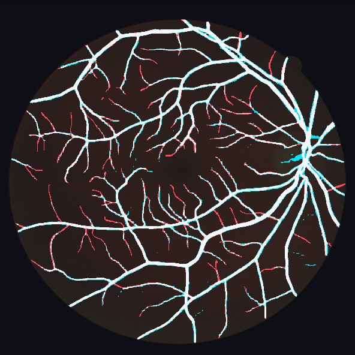
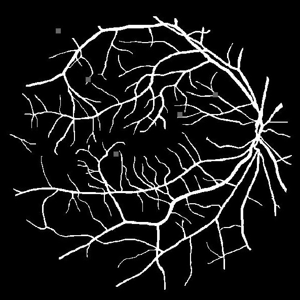
| Dataset | Sample | Source Composite (Col) | Dice | FNR | FP/GT | Thin FN% | Thick FP% | CCs (P/G) | Sample Failure Observation |
|---|---|---|---|---|---|---|---|---|---|
| CHASE | Image_14R | TestImage_11R+Image_14R+epoch+53.jpg Right | 0.809 | 14.9% | 25.3% | 30.8% | 68% | 91 / 2 | GT has 2 connected trees while prediction fractures into 91 components; breaks dark-region secondary branches and adds distant fragments. |
| DRIVE | 10 | Test10+12+epoch+80.jpg Left | 0.793 | 17.4% | 25.6% | 27.4% | 98% | 162 / 950 | Mid-caliber branches break into dashed segments across BL/TL (162 CCs), while central reflex splits thicker trunks slightly. |
| DRIVE | 11 | Test11+15+epoch+80.jpg Left | 0.787 | 19.8% | 23.5% | 29.7% | 98% | 186 / 1024 | Shows a major topological gap severing the superior-right (TR) peripheral arcade (TR FNR 36%) plus fragmented intermediate crossings. |
| DRIVE | 12 | Test10+12+epoch+80.jpg Right | 0.812 | 15.6% | 23.3% | 24.8% | 97% | 137 / 489 | Intermediate temporal vessels fragment into short disconnected dashes and dots, especially in TR/BR quadrants (BR FNR 21%). |
| DRIVE | 16 ★ Representative | Test02+16+epoch+80.jpg Right | 0.805 | 17.8% | 22.0% | 25.3% | 95% | 200 / 78 | Primary Representative: Extreme CC inflation (200 predicted vs. 78 GT = 2.56×); mid-caliber temporal vessels disintegrate into beaded islands. |
| STARE | im0324 | Testim0319+im0324+epoch+39.jpg Right | 0.798 | 16.1% | 26.5% | 27.9% | 74% | 63 / 41 | Dense upper-left vascular tree fractures into dotted islands (63 vs. 41 CCs, TL FNR 20%) alongside disconnected false fragments (DistFP 1618). |
Regional vessel dropouts and spurious false-positive clusters triggered by photometric extremes (dark peripheral vignetting, bright peripapillary reflections, haze/glare) or retinal pathologies (hard exudate clusters, hemorrhages, microaneurysms).
Quantitative Signature: Strong spatial asymmetry in quadrant FNR/FP (up to 0.53 quadrant FP/GT in STARE im0319), elevated distant false positives outside vessel masks, or severe FOV darkness (74%–83% dark pixels in CHASE Image_13L/13R) and bright haze/glare.
Likely Cause: Inhomogeneous fundus illumination shifts local intensity outside the learned green-channel contrast regime, while sharp edges of hard exudates, hemorrhages, and peripapillary fibrous sheaths trigger false-positive vessel responses in the conv-adapter features.
Actionable Fix: Apply green-channel CLAHE + illumination bias-field correction during preprocessing, augment training with synthetic vignetting/glare and lesion masks, and add hard-negative mining around lesions.
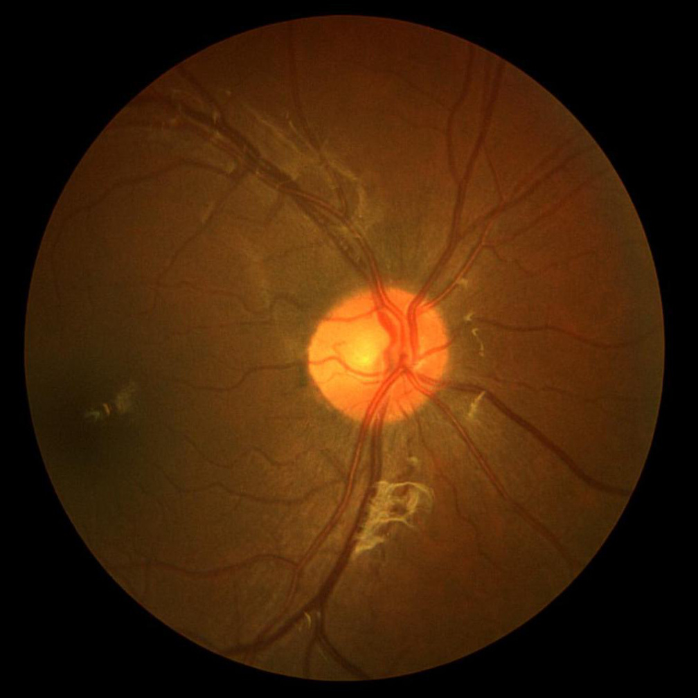
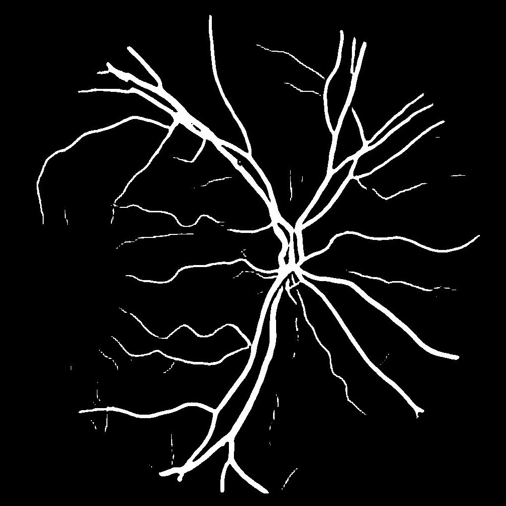
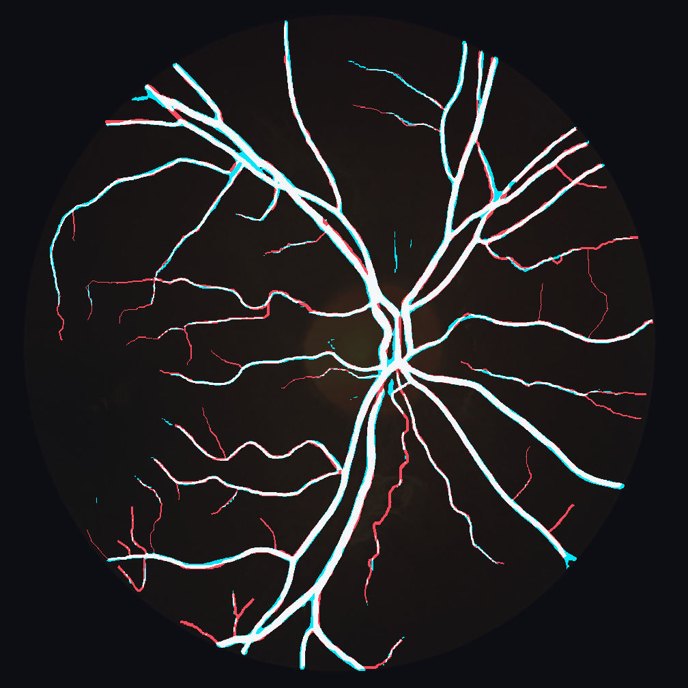
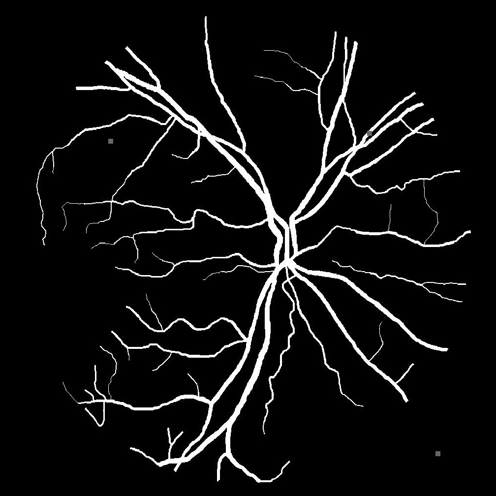
| Dataset | Sample | Source Composite (Col) | Dice | FNR | FP/GT | Thin FN% | Thick FP% | CCs (P/G) | Sample Failure Observation |
|---|---|---|---|---|---|---|---|---|---|
| CHASE | Image_13L | TestImage_12R+Image_13L+epoch+53.jpg Right | 0.821 | 16.3% | 20.3% | 32.4% | 83% | 69 / 178 | Severe under-illumination across temporal FOV (74% dark pixels, mean lum 61.1) plus pale peripapillary sheen causing uneven dropouts. |
| CHASE | Image_13R ★ Representative | TestImage_11L+Image_13R+epoch+53.jpg Right | 0.796 | 20.1% | 20.8% | 37.1% | 78% | 110 / 213 | Primary Representative: Lowest Dice in CHASE (0.796); extreme dark FOV (83% pixels <70 lum) erases distal branches while bright disc fibrosis triggers FP. |
| DRIVE | 03 | Test03+17+epoch+80.jpg Left | 0.802 | 20.5% | 18.7% | 34.4% | 92% | 146 / 482 | Darkest DRIVE fundus (mean lum 82.1, 14% dark pixels) with scattered exudate specks; low contrast drops TR/upper-disc vessels (TR FNR 29%). |
| DRIVE | 08 | Test14+08+epoch+80.jpg Right | 0.801 | 18.7% | 21.8% | 29.9% | 97% | 133 / 568 | Prominent bright yellow hard exudate cluster in macular/BL region and bright optic disc cause TL vessel dropout (FNR 26%) and BL false positives. |
| DRIVE | 14 | Test14+08+epoch+80.jpg Left | 0.802 | 14.7% | 27.4% | 23.5% | 95% | 166 / 543 | Dark red retinal hemorrhages and microaneurysm clusters in BL quadrant induce false-positive spots and local vessel confusion (BL FP/GT 38%). |
| DRIVE | 17 | Test03+17+epoch+80.jpg Right | 0.789 | 17.0% | 27.3% | 25.0% | 92% | 165 / 118 | Strong pale greenish-yellow temporal rim haze (BL FNR 29%) washes out peripheral vessels while bright optic disc edge adds TR artifacts (FP/GT 32%). |
| STARE | im0319 | Testim0319+im0324+epoch+39.jpg Left | 0.793 | 13.8% | 31.2% | 19.6% | 85% | 57 / 43 | Severe yellow-orange glare/over-saturation washes out inferior-right vessel contrast, producing spurious linear FP fragments (BR FP/GT 53%). |